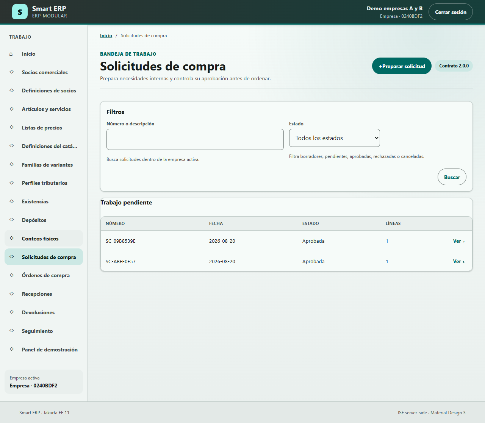
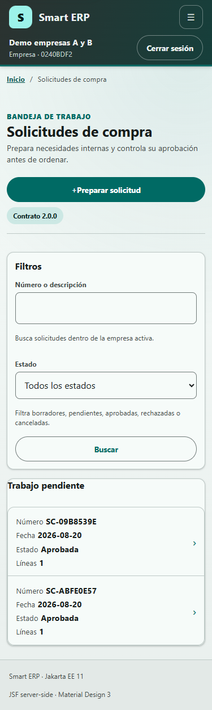
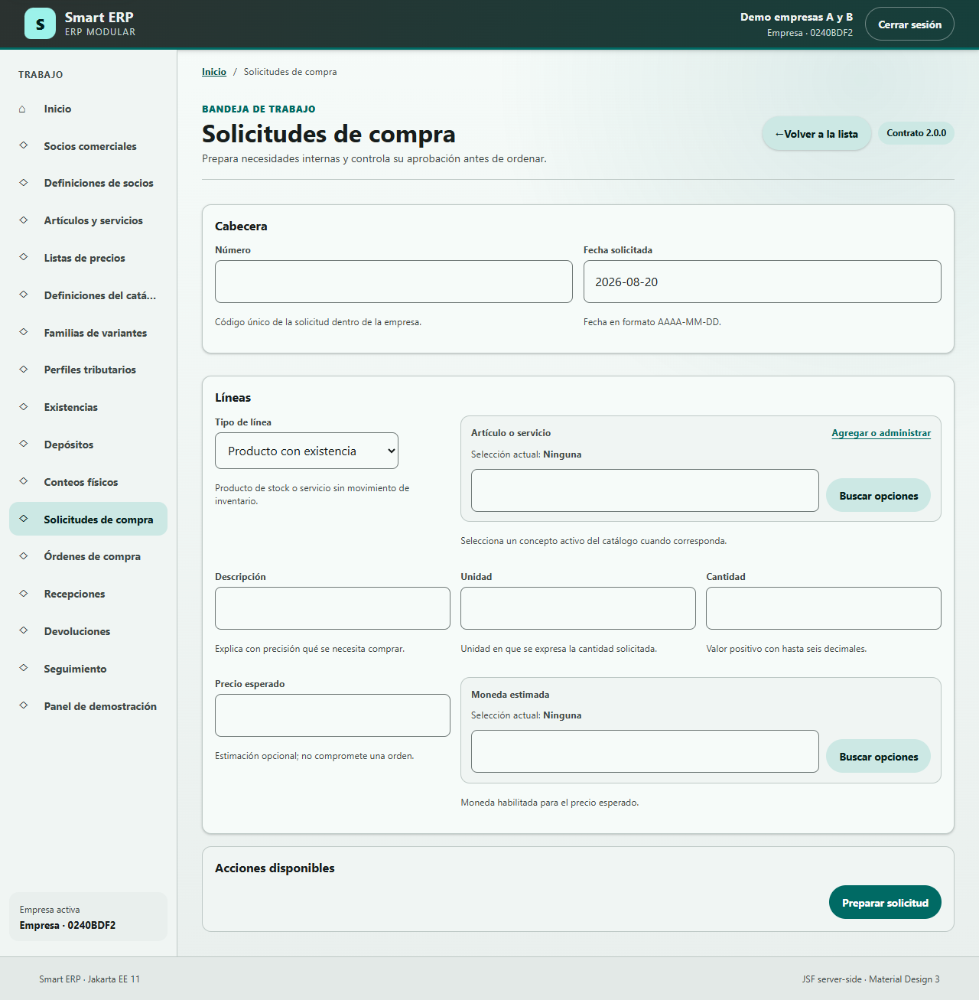
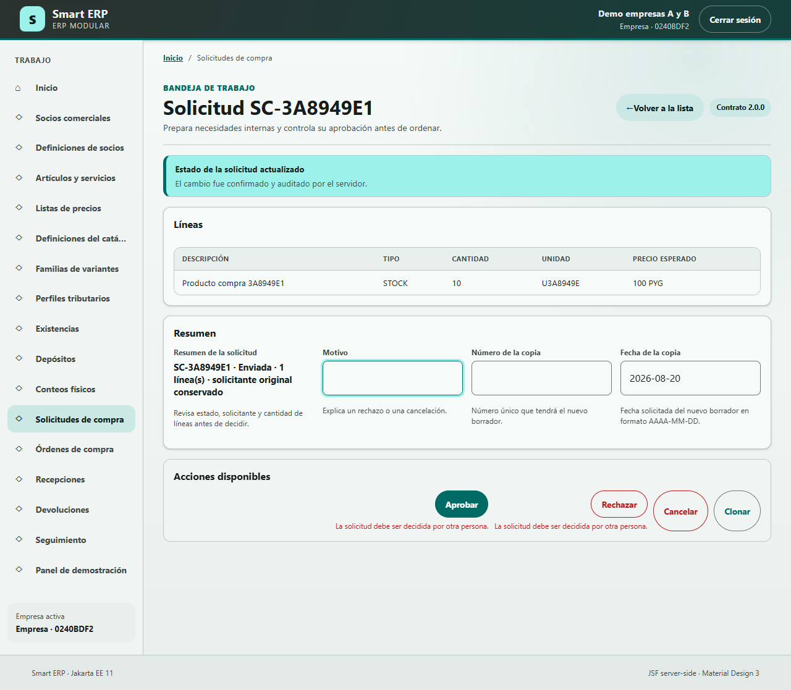

Manual de usuario y soporte - Solicitudes de compra
Smart ERP · Compras · versión 1.0 · 20 de agosto de 2026
Este manual enseña a operar y diagnosticar la pantalla Solicitudes de compra. Su alcance es una pantalla de menú con tres modos: lista, alta y detalle. No cubre órdenes de compra, recepciones, devoluciones ni seguimiento, salvo cuando ayudan a explicar el destino de una solicitud aprobada.
Índice
- Alcance, audiencia y acceso
- Conceptos necesarios para leer este manual
- Permisos y responsabilidades
- Ubicación y modos de la pantalla
- Lista y filtros
- Alta de una solicitud
- Detalle, líneas y cambios de estado
- Diagnóstico para soporte
- Bosquejo orientativo de la pantalla
- Diagrama detallado de datos y triggers
- Caso práctico simulado
- Seguridad, escalamiento y glosario
1. Alcance, audiencia y acceso
La pantalla sirve para registrar una necesidad interna antes de comprometer una compra con un proveedor. Está pensada para solicitantes, aprobadores y personal de soporte. Cada operación queda limitada a la empresa activa de la sesión.
Ejemplo verificado con datos reales
- Caso observado: la base aislada contenía tres solicitudes y las tres pertenecían
a la misma empresa ficticia mostrada por la prueba E2E.
- Resultado observado: la lista y cada consulta se resolvieron con el permiso
purchasing.view y con contexto empresarial; la auditoría registró company_scoped = true.
- Origen técnico:
core.audit_event.company_id,plugin_id,permission_id. - Consulta: 20/08/2026. Los identificadores UUID de los actores fueron omitidos.
Matriz de cobertura
| Nº | Pantalla | Ruta pública | Permisos | Vista y lógica | Persistencia | Estado |
|---|---|---|---|---|---|---|
| 1 | Solicitudes de compra | /faces/app/view.xhtml?route=%2Fpurchasing%2Frequests | purchasing.view, purchasing.requests.create, purchasing.requests.submit, purchasing.requests.approve | app/view.xhtml, PurchasingRequestScreenHandler, PurchasingRequestService | plg_purchasing.purchase_request, purchase_request_line, purchasing_operation; core.audit_event | Relevada, redactada, diagramada y validada |
2. Conceptos necesarios para leer este manual
- Plugin: módulo funcional incorporado físicamente a Smart ERP.
purchasing
es el plugin propietario de Compras.
- Empresa activa: empresa seleccionada para la sesión; delimita los registros
y permisos disponibles.
- Permiso: autorización que el servidor vuelve a comprobar antes de leer o
modificar datos.
- Solicitud de compra: documento interno que expresa qué se necesita, cuánto
y para qué fecha, antes de crear una orden a un proveedor.
- Solicitante: usuario que crea la solicitud y conserva la responsabilidad de
editarla, enviarla o cancelarla mientras el estado lo permita.
- Línea: renglón de una solicitud que describe un producto con existencia, un
producto sin existencia o un servicio, junto con unidad y cantidad.
- Estado: etapa controlada del documento: Borrador, Enviada, Aprobada,
Rechazada o Cancelada.
- Catálogo: conjunto administrado de artículos, servicios, unidades y monedas
que la pantalla consulta mediante contratos públicos.
- Snapshot o copia histórica: valores de descripción, unidad, moneda y otros
datos guardados con la línea para que cambios futuros del catálogo no reescriban el documento.
- Versión del documento: número que aumenta con cada cambio y permite detectar
que otra sesión modificó el registro antes de guardar.
- Idempotencia: protección que evita ejecutar dos veces la misma orden técnica
cuando el navegador reintenta una acción.
- Auditoría: registro técnico inmutable de quién intentó una operación, con qué
permiso, resultado y versión, sin guardar contraseñas.
- Base de datos: conjunto organizado de información que la aplicación consulta
o modifica.
- Esquema: espacio lógico de la base de datos que agrupa objetos; las tablas
privadas de Compras viven en plg_purchasing y la auditoría transversal en core.
- Tabla: estructura que guarda registros de un mismo tipo.
- Registro o fila: conjunto de datos que representa una ocurrencia, por ejemplo
una solicitud.
- Columna o campo de base: dato individual almacenado en una tabla.
- ID o identificador: valor que distingue un registro de los demás.
- Restricción o constraint: regla que la base obliga a cumplir.
- SQL: lenguaje usado para consultar o modificar una base de datos.
- DML: parte de SQL que opera sobre filas mediante
SELECT,INSERT,UPDATE
y DELETE.
- Clave primaria (PK): columna o grupo de columnas que identifica una fila de
forma única.
- Clave foránea (FK): columna que referencia la PK de otra fila.
- Clave única (UK): restricción que impide repetir un valor o combinación.
- Nulo / no nulo (NN): ausencia permitida de valor / obligación de informarlo.
- Relación y cardinalidad: vínculo entre objetos y cantidad de filas que pueden
asociarse, por ejemplo una solicitud con una o muchas líneas.
- Índice: estructura que acelera búsquedas o garantiza unicidad.
- Vista / vista materializada: consulta guardada / resultado almacenado que
requiere refresco. El esquema plg_purchasing verificado no posee ninguna.
- Trigger: rutina que la base ejecuta automáticamente ante un evento.
- Función o procedimiento: rutina de base invocada para validar, calcular o
ejecutar una tarea.
- ABM o CRUD: alta, consulta, modificación y baja de registros.
- C, R, U, D y EXT: leyenda del diagrama: crear, leer, modificar, eliminar y
consultar un sistema o servicio externo.
3. Permisos y responsabilidades
| Permiso | Habilita | Perfil operativo recomendado |
|---|---|---|
purchasing.view | Ver menú, buscar y abrir solicitudes | Consulta y soporte |
purchasing.requests.create | Crear, agregar líneas, clonar y cancelar una solicitud propia | Solicitante |
purchasing.requests.submit | Enviar una solicitud propia a decisión | Solicitante |
purchasing.requests.approve | Aprobar o rechazar una solicitud enviada por otra persona | Aprobador |
La interfaz puede ocultar una acción, pero la autorización efectiva siempre se revalida en el servidor. El mismo usuario que solicitó no puede aprobar ni rechazar su propio documento.
Ejemplo verificado con datos reales
- Caso observado:
SC-3A8949E1fue creada y enviada por un actor y aprobada por
otro; la comparación almacenada requester_id <> decision_actor_id resultó verdadera.
- Resultado observado:
core.audit_eventregistró la aprobación con permiso
purchasing.requests.approve, resultado SUCCESS y cambio de versión 1 a 2.
- Origen técnico:
purchase_request.requester_id,decision_actor_idy
core.audit_event.permission_id.
- Consulta: 20/08/2026. Se ocultaron los dos UUID de actores.
4. Ubicación y modos de la pantalla
Abrí Trabajo > Solicitudes de compra. La ruta usa el parámetro mode:
directory: muestra filtros, resultados y Preparar solicitud;create: muestra el formulario de alta y Volver a la lista;detail: muestra la solicitud elegida, sus líneas y acciones válidas.
Ejemplo verificado con datos reales
- Caso observado: la prueba E2E abrió la lista, cambió a alta mediante
Preparar solicitud, creó SC-3A8949E1 y terminó en detalle.
- Resultado observado: lista y alta no aparecieron mezcladas; el detalle conservó
el ID y la versión del recurso seleccionado.
- Origen técnico: contrato
PurchasingScreenContract.REQUESTS, renderer del shell
y registro final en purchase_request.
- Verificación: 20/08/2026, en 375, 720 y 1280 px.
5. Lista y filtros
Términos de esta pantalla
- Bandeja de trabajo: lista de documentos disponibles para la empresa activa.
- Filtro de texto: búsqueda parcial por número de solicitud o descripción de
una línea, sin distinguir mayúsculas de minúsculas.
- Filtro de estado: selector cerrado con Todos, Borrador, Enviada, Aprobada,
Rechazada y Cancelada.
La lista muestra Número, Fecha, Estado, cantidad de Líneas y la acción Ver. Buscar aplica el texto y el estado; Preparar solicitud abre el alta. En pantallas compactas cada fila se convierte en una tarjeta para evitar desplazamiento horizontal.
Ejemplo verificado con datos reales
- Datos iniciales: tres solicitudes reales de la base aislada, todas con fecha
20/08/2026, estado Aprobada y una línea.
- Acción comprobada: consulta agrupada por estado equivalente al filtro de lista.
- Resultado observado:
APPROVED = 3; buscarSC-3A8949E1identifica una sola
solicitud y su línea contiene la descripción Producto compra 3A8949E1.
- Origen técnico:
purchase_request.request_number,requested_on,
request_state; purchase_request_line.item_description_snapshot.
- Consulta: 20/08/2026. Los valores son ficticios, pero proceden de filas reales.
Captura real - lista expandida

Captura real - lista compacta

6. Alta de una solicitud
Datos de cabecera
| Dato visible | Formato y obligación | Origen y efecto |
|---|---|---|
| Número | Texto, obligatorio, máximo técnico 64 caracteres | Lo ingresa el solicitante; no se repite dentro de la empresa |
| Fecha solicitada | Fecha AAAA-MM-DD, obligatoria | Propone la fecha actual; queda como fecha histórica del documento |
Al pulsar Preparar solicitud, el servidor crea un Borrador con versión 0, el usuario actual como solicitante y al menos una línea válida.
Ejemplo verificado con datos reales
- Datos iniciales: número
SC-3A8949E1, fecha2026-08-20y una línea. - Resultado observado:
purchasing_operationregistró
CREATE_PURCHASE_REQUEST, recurso purchase_request, versión resultante 0 a las 22:20:12 UTC.
- Origen técnico:
purchase_request.request_number,requester_id,
requested_on, request_state, entity_version; operación idempotente en purchasing_operation.
- Consulta: 20/08/2026. El UUID del solicitante fue ocultado.
Datos de la primera línea
| Dato visible | Formato y obligación | Regla |
|---|---|---|
| Tipo de línea | Selector obligatorio | Producto con existencia, producto sin existencia o servicio |
| Artículo o servicio | Referencia buscable; obligatoria para existencia | Sólo conceptos activos y habilitados para compra |
| Descripción | Texto obligatorio, máximo técnico 240 | Se conserva como snapshot |
| Unidad | Texto obligatorio, máximo técnico 16 | Se conserva unidad presentada y base |
| Cantidad | Decimal positivo, hasta 6 decimales | Debe ser mayor que cero |
| Precio esperado | Decimal opcional, no negativo | Es una estimación; no compromete una orden |
| Moneda estimada | Referencia obligatoria cuando hay precio | Conserva código, nombre, decimales y versión normativa |
El selector Artículo o servicio consulta el catálogo comercial por texto; la moneda consulta datos de referencia. Los plugins propietarios entregan la opción mediante contratos públicos: Compras no lee sus tablas privadas.
Ejemplo verificado con datos reales
- Línea observada: tipo
STOCK, artículoPC-3A8949E1, descripción
Producto compra 3A8949E1, unidad U3A8949E, cantidad 10.000000, precio esperado 100.000000 y moneda PYG - Guarani.
- Resultado observado: la conversión presentada/base fue 1 y la base conservó
código, descripción, unidad, cantidad, precio y moneda como snapshots.
- Origen técnico: todas las columnas de
purchase_request_line; referencias EXT
CatalogItemDirectory y ReferenceDataDirectory.
- Consulta: 20/08/2026. No hubo valores sensibles.
Captura real - alta

7. Detalle, líneas y cambios de estado
Abrir y revisar el detalle
Ver abre el documento y muestra estado, fecha solicitada, solicitante, líneas y versión. La versión evita guardar sobre un cambio concurrente.
Ejemplo verificado con datos reales
- Caso observado:
SC-3A8949E1quedó Aprobada, con una línea y versión 2. - Resultado observado: la auditoría registró lecturas
VIEW_PURCHASE_REQUEST_DETAIL con resultado UNCHANGED/SUCCESS.
- Origen técnico:
purchase_request,purchase_request_liney
core.audit_event.
- Consulta: 20/08/2026.
Agregar líneas
Sólo el solicitante puede agregar una línea mientras la solicitud está en Borrador. El servidor reemplaza atómicamente el conjunto de líneas y aumenta la versión. Cuando el documento deja Borrador, el trigger de base impide insertar, modificar o eliminar líneas.
Ejemplo verificado con datos reales
- Entrada real:
SC-3A8949E1, estado Aprobada, versión 2, una línea de cantidad
10.
- Resultado esperado, no ejecutado: la interfaz oculta Agregar línea y el
trigger trg_purchase_request_line_immutable rechazaría cualquier DML sobre la línea con código SQL P2001 y mensaje Final purchase request lines are immutable.
- Origen técnico: estado en
purchase_request, trigger de
purchase_request_line y función reject_final_purchasing_line_change().
- Consulta: 20/08/2026. No se intentó ninguna escritura.
Enviar a aprobación
El solicitante pulsa Enviar solicitud desde Borrador. El estado cambia a Enviada, se registra la fecha/hora de envío y la versión aumenta. La solicitud ya no admite cambios de líneas.
Ejemplo verificado con datos reales
- Caso observado:
SC-3A8949E1pasó de versión 0 a 1. - Resultado observado:
purchasing_operationregistró
SUBMIT_PURCHASE_REQUEST a las 22:20:13 UTC; core.audit_event registró permiso purchasing.requests.submit, resultado CHANGED/SUCCESS y versiones 0 -> 1.
- Origen técnico:
purchase_request.submitted_at,request_state,
entity_version, purchasing_operation y core.audit_event.
- Consulta: 20/08/2026.
Aprobar o rechazar
Un aprobador distinto del solicitante decide una solicitud Enviada. Aprobar no requiere motivo; Rechazar exige un motivo. La decisión conserva actor, fecha y, cuando corresponde, razón.
Ejemplo verificado con datos reales
- Caso observado:
SC-3A8949E1fue aprobada por una persona distinta. - Resultado observado: estado Aprobada, versión 2,
decision_reasonnulo y
operación APPROVE_PURCHASE_REQUEST a las 22:20:17 UTC.
- Origen técnico:
purchase_request.decision_actor_id,decision_at,
decision_reason, request_state, entity_version y auditoría.
- Consulta: 20/08/2026. Se ocultaron los dos UUID de actores.
Cancelar
El solicitante puede cancelar su propia solicitud si está Borrador o Enviada y debe informar un motivo. Una solicitud Aprobada, Rechazada o Cancelada no muestra la acción.
Ejemplo verificado con datos reales
- Entrada real:
SC-3A8949E1, estado Aprobada. - Resultado esperado, no ejecutado: Cancelar no está disponible porque el
estado ya es final; no se realizó un UPDATE para fabricar evidencia.
- Origen técnico: política
PurchasingFloorplanStates.requests()y restricción
ck_purchase_request_state_shape.
- Consulta: 20/08/2026.
Clonar
Clonar solicitud crea un nuevo Borrador con otro número y fecha, nuevas IDs de línea y las mismas descripciones, cantidades y precios históricos. No cambia el documento origen.
Ejemplo verificado con datos reales
- Entrada real disponible:
SC-3A8949E1, Aprobada, una línea de 10 unidades a
precio esperado 100 PYG.
- Resultado esperado, no ejecutado: una clonación válida produciría otro Borrador
versión 0 con una línea equivalente y nuevos identificadores; el origen seguiría Aprobado versión 2.
- Origen técnico:
PurchasingRequestService.cloneRequest()y tablas
purchase_request, purchase_request_line, purchasing_operation.
- Consulta: 20/08/2026. No se ejecutó la clonación.
Captura real - detalle enviado

8. Diagnóstico para soporte
| Síntoma | Comprobación | Causa probable | Acción segura |
|---|---|---|---|
| No aparece el menú | Empresa activa, plugin y purchasing.view | Plugin deshabilitado o permiso ausente | Corregir activación/rol mediante administración autorizada |
| Buscar no devuelve el documento | Empresa, número, texto y estado | Filtro no coincide o documento pertenece a otra empresa | Limpiar filtros y confirmar empresa; no consultar otra empresa manualmente |
| No aparece Agregar línea | Estado y solicitante | Sólo Borrador propio es editable | Revisar detalle y auditoría; no modificar SQL |
| No aparece Enviar | Estado, solicitante y permiso | No es Borrador propio o falta purchasing.requests.submit | Ajustar rol si corresponde |
| Aprobar/Rechazar bloqueados | Solicitante y aprobador | Separación de funciones: autor no decide | Usar otro aprobador autorizado |
| “Revisa los datos ingresados” | Formato de fecha, cantidad, precio y relación de selectores | Campo inválido o referencia incompatible | Corregir desde UI; conservar captura y hora |
| Conflicto de versión | Versión visible y auditoría | Otra sesión cambió el documento | Volver a la lista, reabrir y repetir conscientemente |
Línea final inmutable / P2001 | Estado del padre y trigger | Intento de cambiar líneas fuera de Borrador | Detener la operación; no desactivar trigger |
Ejemplo verificado con datos reales
- Caso observado: para
SC-3A8949E1, el historial idempotente muestra exactamente
Crear 0, Enviar 1 y Aprobar 2; la auditoría confirma los permisos y resultados.
- Uso para soporte: si el usuario informa un reintento, comparar número, empresa,
operación, hora, versión y correlación antes de asumir duplicación.
- Origen técnico:
purchasing_operation.operation_type,resulting_version,
occurred_at; core.audit_event.operation, outcome, result_code, correlation_id.
- Consulta: 20/08/2026. Huellas técnicas e IDs de actores no se publican.
9. Bosquejo orientativo de la pantalla
Representación estimada; la disposición puede variar según versión, resolución, permiso o estado.
┌──────────── SOLICITUDES DE COMPRA · LISTA ─────────────────────┐
│ Título y contexto [Preparar solicitud] │
├────────────────────────────────────────────────────────────────┤
│ Filtros: Número o descripción [________] Estado [▼] [Buscar] │
├────────────────────────────────────────────────────────────────┤
│ Número │ Fecha │ Estado │ Líneas │ Ver │
└────────────────────────────────────────────────────────────────┘
│
Preparar │ Ver
▼
┌──────────── ALTA / DETALLE ─────────────────────────────────────┐
│ [Volver a la lista] │
│ Cabecera: Número [____] Fecha [AAAA-MM-DD] │
│ Línea: Tipo [▼] Artículo [buscar] Descripción [____] │
│ Unidad [__] Cantidad [__] Precio [__] Moneda [buscar] │
│ Detalle: Estado · Solicitante · Versión · Líneas │
│ Acciones según estado: Agregar · Enviar · Aprobar/Rechazar │
│ Cancelar · Clonar │
└────────────────────────────────────────────────────────────────┘
10. Diagrama detallado de datos y triggers
Flujo y relaciones
CatalogItemDirectory [EXT] ── snapshot ─┐
ReferenceDataDirectory [EXT] ─ moneda ──┼──> PURCHASE_REQUEST_LINE (1..N)
│ │ FK compuesta
│ ▼
└──── PURCHASE_REQUEST (1)
│ ID lógico, sin FK
┌─────────────────────────┴─────────────────────┐
▼ ▼
PURCHASING_OPERATION CORE.AUDIT_EVENT
idempotencia append-only auditoría append-only
Cambiar línea
│ INSERT / UPDATE / DELETE
▼
trg_purchase_request_line_immutable [BEFORE, ROW]
└── reject_final_purchasing_line_change()
├── R purchase_request.request_state
└── si estado != DRAFT: error P2001
Modificar o borrar auditoría
▼
audit_event_no_update_or_delete [BEFORE UPDATE/DELETE, ROW]
└── reject_audit_event_mutation() -> “core.audit_event is append-only”
plg_purchasing.purchase_request - C/R/U
| Campo | Tipo | Clave/NN | Acceso y origen visual |
|---|---|---|---|
company_id | UUID | PK, NN | C/R, empresa activa |
purchase_request_id | UUID | PK, NN | C/R, recurso seleccionado |
request_number | varchar(64) | UK por empresa, NN | C/R/filtro, Número |
requester_id | UUID | NN | C/R, solicitante autenticado |
requested_on | date | NN | C/R/filtro, Fecha solicitada |
request_state | varchar(24) | NN, CHECK | C/R/U/filtro, Estado |
submitted_at | timestamptz | opcional | U/R, Enviar |
decision_actor_id | UUID | opcional | U/R, Aprobar/Rechazar/Cancelar |
decision_at | timestamptz | opcional | U/R, decisión |
decision_reason | varchar(240) | opcional | U/R, motivo requerido |
entity_version | bigint | NN, >=0 | C/R/U, control de versión |
Restricciones relevantes: PK (company_id, purchase_request_id), UK (company_id, request_number), estados cerrados, pares actor/fecha coherentes, formas válidas por estado, aprobador distinto del solicitante y versión no negativa.
plg_purchasing.purchase_request_line - C/R/U/D sólo en Borrador
| Campo | Tipo | Clave/NN | Acceso y origen visual |
|---|---|---|---|
company_id | UUID | PK/FK, NN | C/R/U/D, empresa |
purchase_request_id | UUID | PK/FK, NN | C/R/U/D, solicitud |
purchase_request_line_id | UUID | PK/UK, NN | C/R/U/D, línea |
line_position | integer | UK por solicitud, NN, >0 | C/R, orden de línea |
catalog_item_id | UUID | opcional | C/R, selector de artículo |
catalog_code_snapshot | varchar(64) | opcional en par | C/R, código histórico |
item_description_snapshot | varchar(240) | NN | C/R, Descripción |
presented_unit_code_snapshot | varchar(16) | NN | C/R, Unidad visible |
base_unit_code_snapshot | varchar(16) | NN | C/R, unidad base |
conversion_factor | numeric(30,12) | NN, >0 | C/R, conversión |
line_kind | varchar(24) | NN, CHECK | C/R, Tipo de línea |
catalog_source_version | bigint | NN, >=0 | C/R, versión del catálogo |
requested_quantity | numeric(30,6) | NN, >0 | C/R, Cantidad |
expected_unit_price | numeric(30,6) | opcional, >=0 | C/R, Precio esperado |
expected_currency_code | varchar(3) | opcional en grupo | C/R, Moneda |
expected_currency_minor_unit | integer | opcional, 0..9 | C/R, decimales moneda |
expected_currency_name | varchar(160) | opcional en grupo | C/R, nombre histórico |
expected_currency_release_id | varchar(64) | opcional en grupo | C/R, versión normativa |
Relación: purchase_request (1) -> (1..N) purchase_request_line mediante la FK compuesta (company_id, purchase_request_id). El dominio exige al menos una línea.
plg_purchasing.purchasing_operation - C/R
| Campo | Tipo | Clave/NN | Acceso |
|---|---|---|---|
company_id | UUID | PK, NN | C/R, empresa |
idempotency_key | varchar(160) | PK, NN | C/R, reintento técnico |
operation_type | varchar(64) | NN | C/R, crear/cambiar estado/clonar |
request_fingerprint | char(64) | NN, CHECK hexadecimal | C/R, detectar reuso distinto |
resource_type | varchar(64) | NN | C/R, purchase_request |
resource_id | UUID | NN, vínculo lógico sin FK | C/R, solicitud |
resulting_version | bigint | NN, >=0 | C/R, versión devuelta |
occurred_at | timestamptz | NN | C/R, hora de operación |
core.audit_event - C/R, sin relación JPA con Compras
Campos usados y observados para Solicitudes: audit_event_id PK, category, operation, outcome, actor_kind, actor_user_id, company_id, plugin_id, permission_id, result_code, previous_version, resulting_version, correlation_id, occurred_at, resource_type y resource_id. El vínculo con la solicitud es lógico; no existe FK entre esquemas privados. En los eventos observados no se usaron subject_user_id, role_id, system_role_id ni screen_id.
Servicios externos - EXT/R
CatalogItemDirectory: ID, código, nombre visible, tipo, estado activo, alcance
de compra, unidad y versión; Compras persiste snapshots, no una relación JPA.
ReferenceDataDirectory: código de moneda, nombre, unidad menor y release; la
moneda se guarda completa sólo cuando existe precio esperado.
Ficha de triggers
| Dato | trg_purchase_request_line_immutable |
|---|---|
| Tabla | plg_purchasing.purchase_request_line |
| Momento/evento/nivel | BEFORE INSERT, UPDATE o DELETE; por fila |
| Condición | Consulta el estado de la solicitud propietaria |
| Lee | purchase_request.company_id, purchase_request_id, request_state |
| Modifica | Ninguna tabla secundaria |
| Llama | reject_final_purchasing_line_change() |
| Error | P2001, Final purchase request lines are immutable |
| Efecto funcional | Sólo permite cambiar líneas mientras el padre está Borrador |
| Evidencia | Metadatos PostgreSQL 18.4 y migración V1, 20/08/2026 |
| Dato | audit_event_no_update_or_delete |
|---|---|
| Tabla | core.audit_event |
| Momento/evento/nivel | BEFORE UPDATE o DELETE; por fila |
| Condición | Todo intento de modificación o borrado |
| Lee/modifica | No modifica tablas secundarias |
| Llama | core.reject_audit_event_mutation() |
| Error | core.audit_event is append-only |
| Efecto funcional | La evidencia técnica sólo admite nuevas filas |
| Evidencia | Metadatos PostgreSQL 18.4, 20/08/2026 |
Ejemplo verificado con datos reales
- Resultado observado: el esquema tenía 12 tablas, cero vistas y cero secuencias;
para esta pantalla participan directamente tres tablas privadas y la tabla de auditoría transversal, más dos servicios EXT.
- Triggers observados: uno protege líneas de solicitudes y otro protege la
auditoría frente a UPDATE/DELETE.
- Resultado esperado, no ejecutado: una escritura sobre la línea aprobada de
SC-3A8949E1 sería rechazada por el trigger; no se probó mediante DML.
- Consulta: 20/08/2026, transacción
READ ONLY = on, usuario locallogixone.
11. Caso práctico simulado
Ejemplo simulado: una oficina necesita 5 resmas de papel. El solicitante abre la lista, pulsa Preparar solicitud, informa un número nuevo, fecha, producto, unidad y cantidad, y guarda. Luego revisa el detalle y envía. Otra persona con permiso de aprobación abre el documento y decide. Este ejemplo es pedagógico y no se contabiliza como evidencia real.
12. Seguridad, escalamiento y glosario
Reglas de seguridad
- No otorgar permisos para “hacer aparecer” un botón sin validar la función del
usuario.
- No aprobar con la identidad del solicitante ni compartir cuentas.
- No corregir solicitudes mediante SQL, no desactivar triggers y no reducir la
versión manualmente.
- No enviar a soporte contraseñas, tokens, capturas con secretos ni UUID completos
de actores cuando no sean indispensables.
- Conservar empresa, número, hora, estado, acción, mensaje y correlación al escalar.
Información que soporte debe solicitar
- Empresa activa y usuario afectado, identificados por canales seguros.
- Número de solicitud y fecha aproximada.
- Modo de pantalla: lista, alta o detalle.
- Acción exacta y mensaje visible.
- Estado y versión mostrados.
- Hora con zona y, si aparece, ID de correlación.
- Captura sin secretos y pasos para reproducir.
- Confirmación de plugin activo y permisos efectivos.
Glosario de consulta
Aprobador: persona distinta del solicitante que decide una solicitud Enviada. Borrador: estado editable por el solicitante. Enviada: estado pendiente de decisión. Aprobada/Rechazada/Cancelada: estados finales de la solicitud. Línea: necesidad concreta dentro del documento. Snapshot: copia histórica de datos externos. Versión: contador de concurrencia del documento. Idempotencia: protección contra reintentos duplicados. Correlación: código técnico que vincula registros de una misma operación. P2001: código SQL usado por el trigger al rechazar cambios de líneas finales.
Evidencia y límites de validación
- Base consultada: PostgreSQL 18.4, base
logixone, candidata aislada. - Acceso: sólo
SELECT, catálogos y metadatos dentro de transacciones
READ ONLY; no se ejecutaron DML, DDL, migraciones ni procedimientos con efecto.
- Objetos comprobados: tablas, 57 columnas de los cuatro objetos documentados,
restricciones, cinco índices de solicitud/línea, ausencia de vistas y secuencias, dos triggers y sus funciones.
- Ejemplos reales: 14 bloques; dos identificadores internos de actores protegidos.
- Capturas reales: 4, generadas por Playwright sobre la aplicación local con datos
ficticios y sin secretos.
- Validación independiente por otra persona: pendiente.